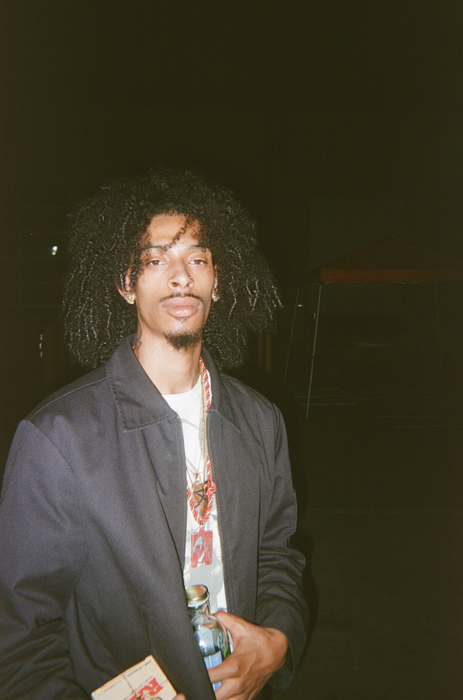

About JAH5
Early Influences
JAH5 is more than just an artist; he is a movement. Born into a home that vibrated with music, from old soul to early 2000s rap, JAH5’s foundation in music was laid before he even realized its role in his life. “The house was damn near rumbling because my dad was always just bumping loud ass music through the speakers,” he recalls. From those early days of soaking up sounds to creating his first beat in Gardena, California, music quickly became his language and his calling.
Turning Pain into Purpose
When his father passed away, JAH5 turned to music as a way to process, express, and ultimately thrive. His first studio session, brought about by his mom’s encouragement, marked the start of a journey that would define his style and mission. He started making beats on his own and eventually realized that the music was already beginning to surround him. He would watch as his high school friends would freestyle and rap, which pushed him to step into the game for himself. JAH5 was intimidated at first because he thought his friends were levels ahead of him, but he eventually built up the courage to give it a shot. Instead of trying to fit in and copy flows, he went his own route. “I developed my style by really just being myself because I didn’t want to sound like anybody else. I wasn’t trying to imitate someone else’s style,” he shares. This insistence on authenticity remains a cornerstone of his artistry today.
Buiulding a Sound, Building Confidence
For JAH5, the journey hasn’t been without its challenges. Early on, he had to learn how to write songs, find confidence on the mic, and build everything from scratch. “Every challenge that comes with being an artist, I’ve had to overcome. And they just help me be disciplined, respect myself, and respect others,” he reflects. This commitment to growth shines in his music, which seamlessly combines “sounding good” with “rapping real shit.” He dedicated nearly two years to refining his technical abilities, ensuring that his lyricism could stand shoulder to shoulder with his melodies.
Vison and Mission
Today, JAH5 describes his craft as “cooking up classics.” His music is driven by a desire to leave a lasting impact and make timeless music. “I feel like we’re a catalyst, like the way that we’re gonna drop soon, man, it’s gonna be something to be looked back on,” he says confidently. His vision extends beyond just making hits—he wants to inspire others, bring positivity to the youth, and prove that discipline and passion can lead to greatness.
Spreading Positivity
One of the most defining aspects of JAH5’s journey is his dedication to promoting positivity, and learning how to spread that sentiment through his music. “We’re just promoting positivity and constructiveness for the youth, for ourselves, for everyone,” he says. He believes in helping others not for recognition, but because it’s the right thing to do. “Some just don’t have opportunity. If you help somebody out, you don’t know how that’s going to come back. You should just help without knowing if it’s going to come back.”
Musis and Community
This sense of community is integral to JAH5’s identity as an artist. He’s driven not only by his own ambition but by the need to uplift those around him. For JAH5, music isn’t just a personal pursuit; it’s a way to give back, inspire, and encourage others to reach their potential. While JAH5’s relationship with music has evolved over the years, it has always remained a central part of his identity. It started as a passion for sound and expression, and it has grown into a deep appreciation for the art itself. “I love music in a different way now. I really just appreciate the art of music—not just how it sounds, not just how it feels—but everything,” he explains. His music reflects his growth, blending his personal experiences with his artistic exploration.
False Reality Collective
Through this journey, JAH5 has remained committed to authenticity. He doesn’t let external pressures shape his music but instead seeks genuine feedback from his audience. “I just want people to hear my music honestly, and I want just genuine feedback—whatever they think.”
JAH5’s story isn’t just about his individual success—it’s about the community he’s building and the lasting impact that he plans to leave. Dedicated to his little brother and the idea of creating something bigger than himself, JAH5 speaks passionately about his collective, the Palace. “Rest in peace, my little brother, man. Palace. The Palace. JAH5 and The Palace are coming to take over everything,” he says with conviction.
Originally published by Mike Weisman on 4GOT10 Magazine on December 8, 2024.
